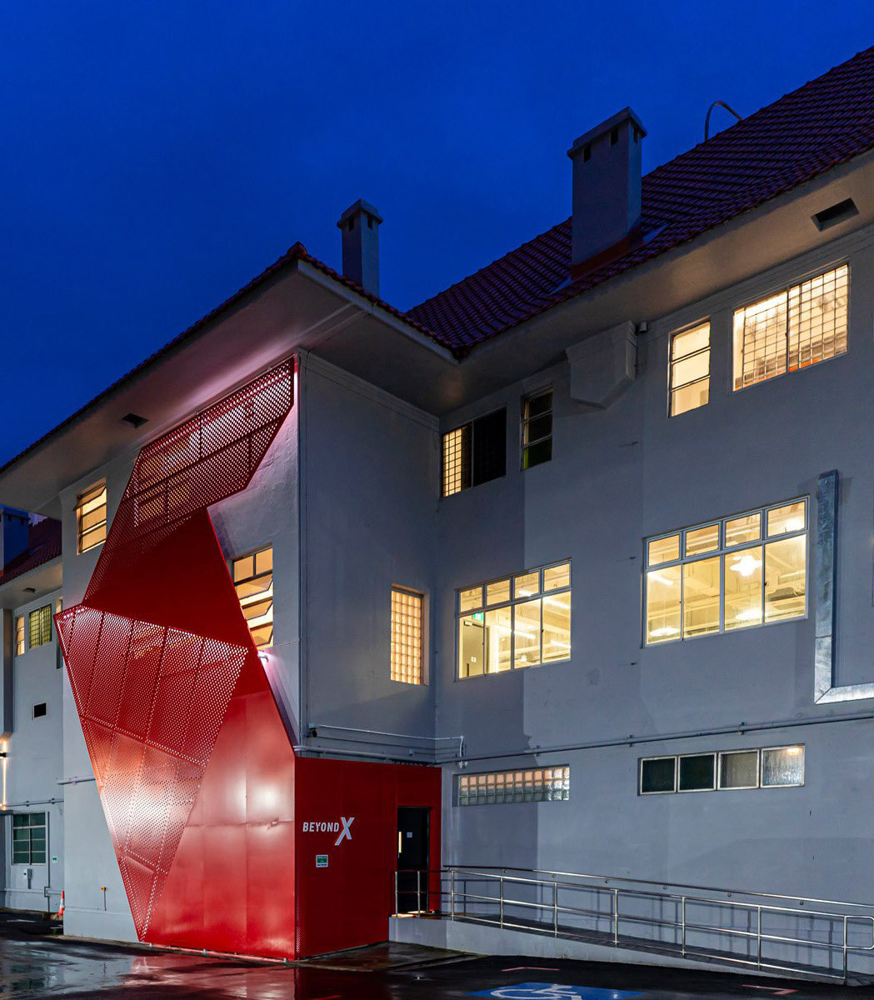

As works progressed, the true condition of the upper floor became apparent. The existing ceiling and roof structure were no longer fit for purpose, requiring replacement of the original joists and supports with a new steel framework. This structural intervention created a dramatic internal volume, but also introduced new technical challenges.
The increased ceiling height required careful development of the ACMV strategy to ensure effective air distribution and occupant comfort. Mint worked closely with the structural engineers to integrate pipework and cable containment within the new steel structure.
Externally, lighting defined the character of the building. In close coordination with the lighting specialist and local authorities, a façade lighting scheme was developed to reflect the fast-paced, technology-driven nature of the teams working within. Installation required detailed planning and coordination with road authorities, including temporary road closures.

The delivery of the 21 Keppel refurbishment reflects the value of early contractor involvement, disciplined design development and close coordination across the project team. By identifying constraints early, managing risk proactively and maintaining alignment on cost, programme and scope, the project was delivered efficiently while meeting BeyondX’s objectives.
The working relationships strengthened through the project led to continued engagement and repeat opportunities on subsequent work. A century-old building, wired for its next chapter. That is what happens when old bones meet new engineering.